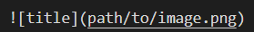

曾经尝试过自己买服务器、搭wordpress，维护起来费时费钱；尝试过cnblog，界面虽友好，但定制不够灵活。而在程序猿届比较流行
有bigger的是github.io，其可免费托管在github上，原生支持markdown语法。本文假设你已经有了git和bash基础，仅简要记录搭建此github.io的主要过程和碰到的问题。
主要流程
创建github.io仓库
选择一个博客框架
这里我选择的是主流框架Hexo，跟着教程一步一步装环境、pull代码就好了
注意需要配置git的仓库路径，改_config.yml
1 | # Deployment |
配置好git和ssh公钥后，一个命令就能同步改动到github上
1 | hexo clean && hexo g && hexo d |
选择一个主题
我选择的是yilia主题 选择主流的next主题 next安装过程
建议使用vscode
装上markdown preview插件和hexo插件，使用git bash，让效率变得更高
改进
解决插入图片问题
hexo中有个资源文件夹的概念，在hexo配置中开启post_asset_folder后，每篇新建的文章将会有个同名目录，将要插入的图片置于该目录下。
hexo中插入图片的方法有两种：
1 |  |
1 | {% asset_img example.jpg This is an example image %} |
第一种在首页不能预览出来，第二种在首页也能显示出来，效果如下。


增加评论功能
评论功能是博客必不可少的交流平台，评论系统有很多，国产的大多不稳定、随身可能倒闭，国外盛行的disqus存在被墙的问题，基于github的issue的评论系统需要github账号登录，最后选用了valine作为评论系统。已有前辈给出了在hexo next中使用valine的解决方法。
valine是一个无后端的评论系统，后端的存储托管在leancloud上。前端只用写死appid和appkey，就可以实时从后端存储获取到当前文章的评论，那么怎么知道哪些评论对应哪个文章呢，后端在存储评论的同时会存储该评论所属文章的url。所以文章的永久url不能轻易变化，否则历史评论将加载不出来。
博客最重要的是内容和坚持创造内容，博客环境只要简单、易用、高效就好，有些blog看着华丽但是占用资源太高，适得其反。希望我的经验对你有点帮助，欢迎在下方评论区交流你的想法！
几个还不错的搭建hexo教程
http://saili.science/git/#more
https://yangbingdong.com/2017/build-blog-hexo-advanced/ 这人的博客一打开就卡，把我电脑gpu全吃完了